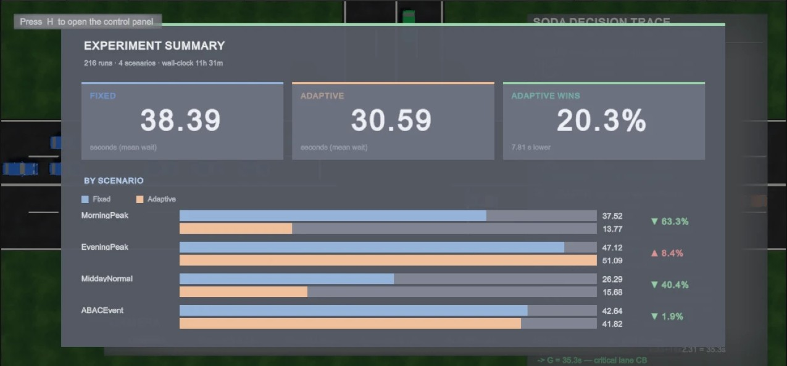

An adaptive signal for the ABAC university entrance on Bang Na, built from a camera, a counting algorithm, and a digital twin that tested it across 216 simulation runs.
The junction this project is about, filmed by drone just before the light turned green. Queues stand on both approaches, motorcycles have filtered to the front, and taxis wait along the left kerb.
The traffic light at the ABAC entrance runs on a fixed timer. It gives the same green to every direction whether ten cars are waiting or none. We built a system that watches the queues with a camera and gives green to whoever actually needs it.
We measured the junction ourselves and found that the fixed timer hands out green almost backwards. The through road gets three times the green it needs. The right turn into the university gets far too little, so its queue grows every cycle and reaches the next junction within about six minutes. A security guard stands at the gate waving cars through by hand, because the signal cannot.
1 · Computer vision. We filmed the junction by drone, labelled 6,585 images by hand, and trained a model to find cars, motorcycles and heavy vehicles from above. Its vehicle counts land within 1.7% of a human count.
2 · The algorithm. Once a second, the controller reads one number per traffic light: how many vehicles are waiting. It gives green to the queue that formed first, for as long as that queue needs.
3 · Unity test. We rebuilt the junction as a 3D simulation, with cars calibrated to leave a queue at the same pace as real ones. Then we raced the old fixed timer against our controller on exactly the same traffic, 108 times each.
The average wait also falls, by 20.3% per simulation run, or 12.6% counted car by car. All three results are statistically significant (p < 0.001 for the first two).
It is not better everywhere. In the busy evening scenario, when every direction is jammed at once, the new controller's average wait is 8.4% worse than the timer's. There is no empty lane to skip and no queue that ever clears, so its fairness rule switches green every twenty seconds and loses time to the amber and all-red between switches. What it buys with that time is fairness: the worst waits still fall. Page 11 explains this in full.
The ABAC entrance is a T-junction. A main road runs left to right, and the university gate sits on one side. Traffic makes six distinct movements through it, and the report names each one with a letter.
The project proposal assumed the light ran on 30 seconds per direction. We timed it three different ways and found a 107-second cycle instead. We also measured how quickly cars leave a queue at this exact junction: one every 2.31 seconds, after 2.95 seconds lost while the first car gets going. Both are slower than textbook values, largely because motorcycles filter to the front and have to clear before the cars can move.
| Movement | Green it gets | Green it needs | Demand ÷ capacity | What happens |
|---|---|---|---|---|
| Bx right turn in | 20 s | 28.6 s | 1.51 | Queue grows 3.7 cars every cycle |
| A straight through | 40 s | 12.3 s | 0.25 | Holds three times what it needs |
A demand-to-capacity ratio above 1.0 means more cars arrive than the green can clear, so the queue never settles. The Bx queue has room for about twelve cars before it backs into the next junction, 78 metres up the road, and at 3.7 extra cars a cycle it fills that space in 5.7 minutes.
The busiest movement has no light at all. Cars turning left into the university (Ax) outnumber cars going straight by 3.5 to 1. They share the outer lane with some straight-through traffic, and a single straight-through car stopped at red blocks every left-turner behind it, even though the left-turners have no red light to wait for. That is why the guard waves cars in by hand. No signal controller can give Ax more green, because it has no signal. The only lever is to clear the lane that blocks it faster.
A camera watches the queues, an algorithm decides, and the lights change. A simulation lets us test that loop without touching a real road.
Each part talks to the next through a simple, fixed format: a handful of numbers. That let three people build them in parallel, test each on its own, and swap the simulation's perfect car counts for the camera's real ones without rewriting the algorithm.
| Part | Built by | Takes in | Gives out |
|---|---|---|---|
| 1 · Computer vision | Ratchanon P. · Warachai A. | video | vehicle counts |
| 2 · The algorithm | Ratchanon P. · Warachai A. | vehicle counts | which lights are green, and for how long |
| 3 · Unity simulation test | Badin B. | the algorithm's decisions | waiting times, queue lengths, cars cleared |
Before we could fix the timing, we needed to know how much traffic really uses each movement. Counting by hand for hours is slow and error-prone, so we trained a model to do it.
We flew a drone over each approach at three times of day, morning, midday and evening, across July and August 2026: about 6.6 hours of video in 20 flights. A drone battery lasts 20 to 25 minutes, so each flight is its own recording.
The drone is only a measuring tool. A real installation would use a fixed camera on a pole at a similar height, since nobody can fly a drone over a junction all day.
A model learns what a car looks like from examples. We took a frame every 3.5 seconds and two people drew a box around every vehicle by hand: 6,585 images holding 57,260 labelled vehicles.
We started with five kinds of vehicle and ended with three. From overhead, the open bed that tells a pickup from a saloon car is only a few pixels wide, so even the human labellers disagreed. We grouped them the way traffic engineers already do, by how much road space each takes.
We used YOLOv8, a widely used object detector, and taught it in four steps, each building on the last: first on everyday photos, then on drone footage from other cities, then on our first ABAC dataset, and finally on the full one. Starting from a model that already understands aerial views needs far less of our own data.
We kept the images at 1280 pixels wide rather than the usual 640. Shrinking further would have turned distant motorcycles into dots too small to detect, and they are a fifth of the traffic.
Frames taken 3.5 seconds apart are nearly identical. If we had shuffled them randomly into training and test sets, the model would be tested on pictures it had practically already seen, and would look far better than it is. So we held back entire flights: the four test flights were recorded on different days, in different light, and the model never saw a single frame of them.
The standard score for a detector is mAP, roughly how well its boxes line up with the human ones. On the unseen test flights:
| Vehicle | Test examples | mAP@50 | Finds | Right when it says so |
|---|---|---|---|---|
| Car | 4,066 | 0.972 | 92% | 94% |
| Motorcycle | 1,281 | 0.911 | 85% | 93% |
| Heavy vehicle | 70 | 0.766 | 71% | 77% |
| All vehicles | 5,417 | 0.883 |
But mAP is not the number this project needs. We need counts. So we counted one 15-minute stretch of video by hand and ran the counter on the same footage.
Counting beats what mAP suggests because the two ask different questions. mAP penalises a box drawn two pixels too wide, even around the right car. The counter only asks whether a car's centre crossed a line, and a slightly loose box still answers that correctly.
Five separate bugs made the counter wrong on the way here. One counted each car about thirty times as it drove across the frame. Another quietly filed every heavy vehicle as a car. None of them showed up in the model's own score. Every one produced believable numbers and was caught only by comparing against a hand count. That is why hand-counting stayed part of the project to the end.
The taxis that queue along the kerb waiting to be called in never move, so the counter ignores any vehicle that has not travelled at least 60 pixels. We learned about the taxis by interviewing the security guard, and wrote the filter before counting, not after.
To count a whole hour of drone video, the counter follows each vehicle from frame to frame with a tracker so it is counted exactly once. This runs on a laptop after filming, and speed does not matter.
The controller in Part 2 does not follow individual cars. Once a second it asks only how many vehicles are inside this box right now? That needs no tracker, so it can run on cheap hardware beside the road.
A fixed timer asks nothing and follows its schedule. Our controller asks one question every second: how many vehicles are waiting at each light?
The junction has seven lanes but only four traffic lights, and the controller works light by light. Once a second it reads four numbers, the vehicle count in each light's waiting zone. Nothing else: no speeds, no number plates, no idea which car is which. Everything it decides comes from those four numbers.
Keeping its view that simple is deliberate. It is exactly what a camera with a basic detector can supply in real time, so the controller could actually be installed.
The core idea is to keep two decisions apart.
The light whose queue started forming first, however many cars it holds. Each light keeps a clock that starts when its first car arrives and resets when it is served. It is first-come, first-served, by lane.
If it chose the longest queue instead, a quiet lane would wait forever behind a busy one.
Long enough for the cars actually waiting, using the two numbers we measured at this junction:
green = 2.95 + 2.31 × cars
kept between 8 and 45 seconds. 2.95 s is the time lost while the first car gets moving; 2.31 s is the gap between each car after that.
Worked example. Eight cars are waiting at light B. It gets 2.95 + 2.31 × 8 = 21.4 seconds of green. With one car it would get the 8-second minimum; with twenty it would hit the 45-second ceiling.
Some movements cross each other and must never be green together; others can safely share. The controller knows six clashing pairs. Once it has chosen who goes next, it adds every other waiting light that clashes with nobody already chosen, so as many cars as possible move at once.
| Cannot be green together | Why |
|---|---|
| A and Bx | Bx turns right across A's path into the university |
| A and CB | CB crosses A's lanes to reach the far side |
| B and CB | CB merges straight into the lane B is using |
| Bx and CB | their paths cross in the middle of the junction |
| A2 with Bx and CB | A2 shares A's light, so it clashes with whatever A clashes with |
A2 is straight-through traffic in the outer lane, shared with the Ax left turn. It uses the same physical light as A, so A and A2 are always green together.
The green time from the formula is a ceiling, not a promise. A phase can end early:
An adaptive controller should also find, without being told, the fix our measurements pointed to: move green time from the over-served through road A to the starved right turn Bx. Part 3 tests whether it does.
You cannot experiment on a public road. So we rebuilt the junction in the Unity game engine, filled it with simulated cars, and ran both controllers on it.
The same geometry as the real junction: seven lanes, four traffic lights, the shared outer lane where straight-through traffic blocks left-turners, and the left turn into the university that must give way while the right turn is moving. The fixed timer runs the real measured plan, not an invented one:
| Stage | Green | Length |
|---|---|---|
| 1 | A, A2 and B (straight through both ways) | 40 s |
| 2 | B and Bx (right turn into the university) | 20 s |
| 3 | CB (out of the university) | 31 s |
| Amber and all-red between stages: 3 s + 2 s, three times | 15 s | |
| Full cycle, within about a second of the 107 s measured on site | 106 s |
Every simulated car has one of three driver temperaments: careful, normal or aggressive. Each has its own reaction time, braking and willingness to run an amber. Cars keep a safe following distance that grows with speed, and when the light turns green a queue does not leave all at once. Each driver waits to see the car in front move first, so the queue pulls away car by car, as it does on a real road.
The most important check in the whole project. Our first simulation let a queue leave at one car every 0.72 seconds. The real junction manages one every 2.31. The virtual junction could move 3.2 times as much traffic as the real one, which made every result it produced too optimistic. We found it because a teammate watching the simulation said the cars were leaving too close together. After fixing it, the simulation discharges at 2.28 seconds per car, within 1.5% of reality, and an automated test now keeps it there.
We rebuilt one real 107-second cycle from the drone footage, car by car, and played it through the simulation under the real timer. On the main through lane, the cars that arrived during the green crossed the stop line within 0.37 seconds of when they did in real life, on average. The four cars already queued at the start left a few seconds early, because in the video a cluster of motorcycles sat ahead of them, and the simulation has no motorcycles.
If the fixed timer got an easy stream of cars and our controller a hard one, the comparison would be meaningless. So every race is a pair: the same random seed produces exactly the same cars, arriving at exactly the same moments, for both controllers. Any difference in waiting time comes from the controller alone.
| Scenario | What it represents | Where the numbers come from |
|---|---|---|
| Morning peak | heavy traffic into the university | measured from drone video |
| Midday | ordinary traffic on every approach | measured from drone video |
| Evening peak | heavy traffic out of the university | partly measured, partly estimated |
| Campus event | heavy in and out at once, as on graduation day | estimated |
A simulation with a bug gives confident wrong answers. We wrote 11 sets of automated tests that check the code outside Unity: that clashing lights are never green together, that no lane can be locked out forever, that the car model discharges at the measured rate, that the scene's settings match the code's, and more. Several real bugs were caught this way before they could reach the results, including a clock that let one busy lane win every decision and a Unity setting that silently kept old values in the scene file.
For each pair of runs we recorded how long every car waited, the longest wait of all, and how many cars got through. We then used the standard statistical tests for paired data to check whether the differences were real or could have happened by chance.

The average wait fell from 38.4 to 30.6 seconds, 20.3%, when each run counts equally (p = 7 × 10−9). Counting every car individually instead, it fell from 40.8 to 35.7 seconds, 12.6%. The two figures differ because the busier scenarios hold more cars, and those are where the new controller gains least.
In the morning and at midday, some lanes are often empty. The new controller skips them, skipping over 200 empty lights per run, and ends a green the moment its queue has cleared. A fixed timer cannot do either.
In the evening peak every direction is full at once. That removes both of the new controller's advantages at a stroke: there is no empty lane to skip (it skipped 7 per run, against over 200 in the morning) and no queue ever clears, so a green never ends early.
What remains is its cost. With every lane waiting, some lane always crosses the 40.5-second fairness limit, so the anti-starvation rule cuts 94% of greens the moment it is allowed to, at 20 seconds. The controller ends up rotating green every twenty seconds and pays the five seconds of amber and all-red, plus the start-up delay, on every switch.
| Per 30-minute evening run | Fixed timer | Our controller |
|---|---|---|
| Phases | 51 | 72 |
| Time spent on amber and all-red | 255 s | 381 s |
| Time lost to cars getting started | 150 s | 212 s |
| Extra time lost to switching | +188 s (10.4% of the run) |
That lost tenth of the junction's capacity is why the evening average is worse. But the controller is spending it on something: fairness. Even in the evening, the right turn Bx waits 43% less, and the longest wait anywhere falls 23%. The time comes out of the two straight-through lanes A and B, which together carry more than four times as many cars as Bx, so the average across all cars goes up.
What this means. The new controller does not lower the average wait in every condition. When the whole junction is saturated at once, it trades about a tenth of its capacity for fairness: the worst waits drop and the starved lane recovers, while the average rises. The setting that controls that trade, the 20-second minimum before a green can be cut, is a candidate for tuning in future work.
Our measurements said the junction would work better if green moved from the through road A to the right turn Bx. Nobody told the controller that. Across all four scenarios it did exactly that on its own: Bx waited 55% less and moved 32% more cars, while A waited longer. The algorithm reached the same conclusion as the field measurements.
Figures in this document come from the project's fourth and final experiment batch (216 runs, completed 19 September 2026) and from the field measurements in the project report. The full method, every intermediate result and the complete record of defects found and fixed are in the project report and its technical baseline, SODA_BASELINE.md.